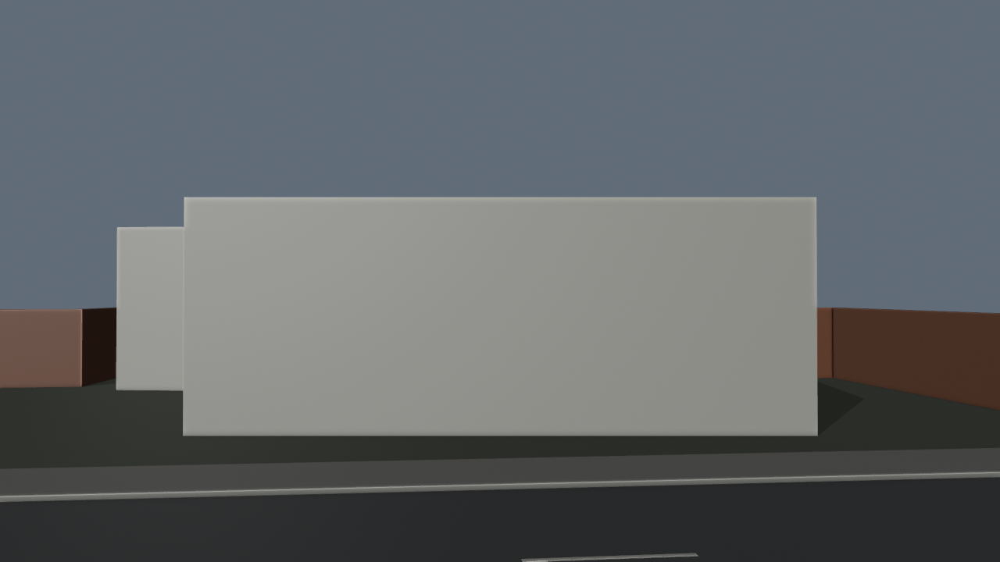
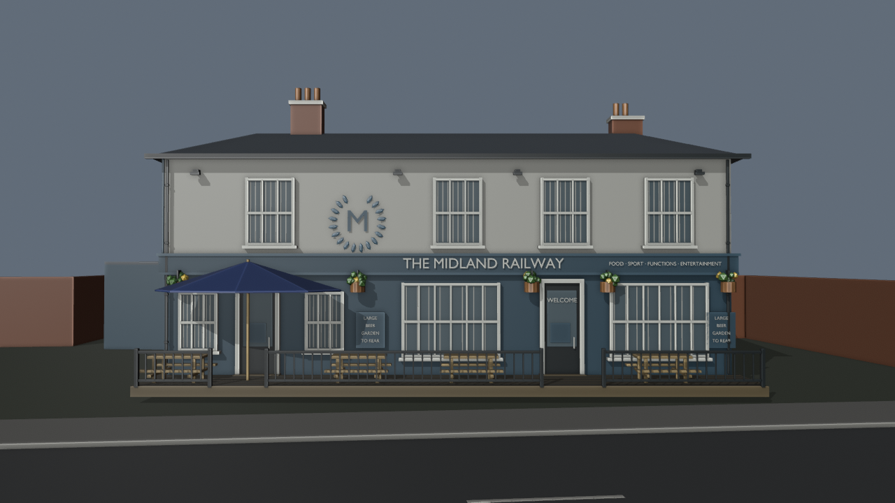
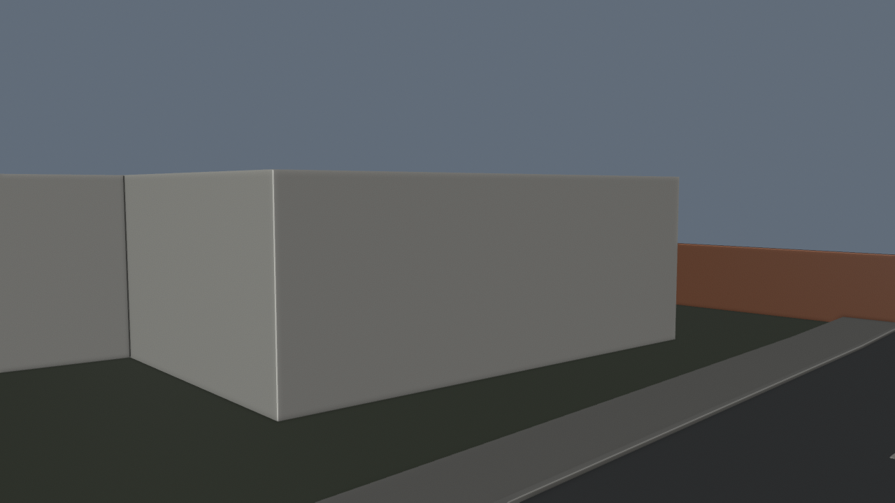
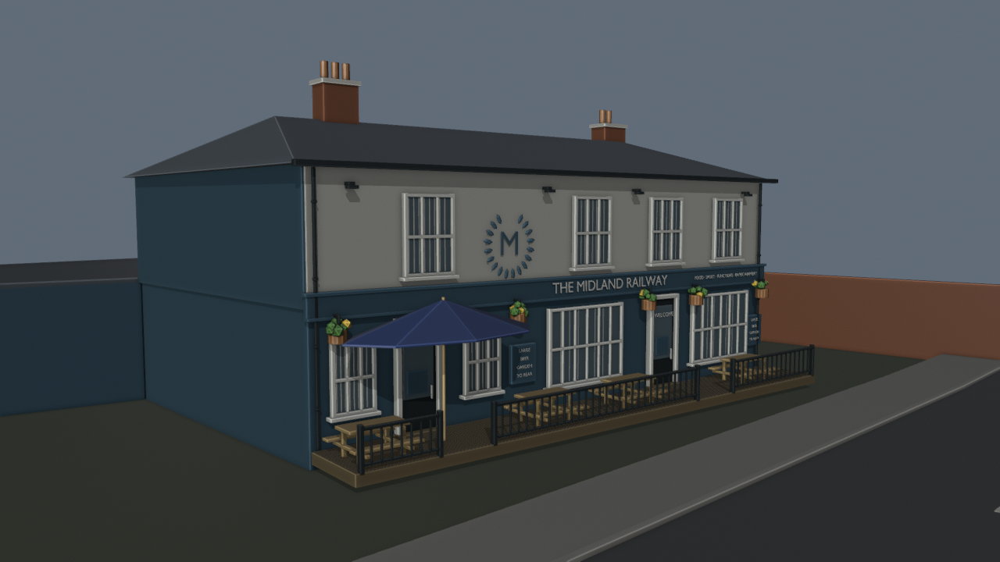
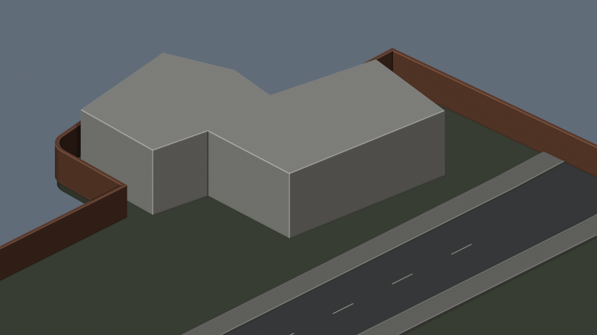
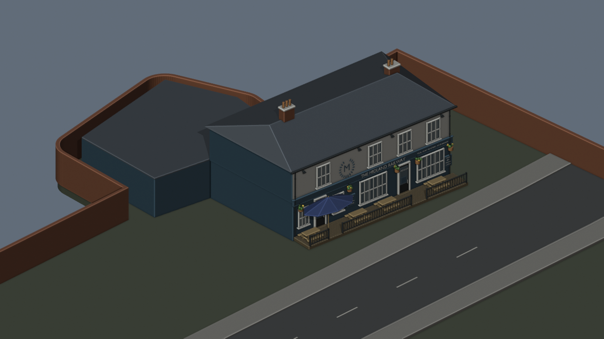

Extension in progress. Google satellite verification and number 29 remain pending. This pub assembly can move independently of the provisional roads.
405 new closed meshes and 13 text objects, following the reviewed official exterior photo. Blue/white walls, sash windows, entrances, fascia, roof/chimneys, deck, picnic furniture and umbrella. Geometry dimensions and unseen rear wing remain estimates. Closed static exterior only.
27,999 selected Blender clearance rays and 3,111 ground-support samples still pass. Prior pub/Taraj and road placement retained. BO3 unchanged. Workbench material-colour previews show geometry, not final textured lighting.






Evidence and implementation limits · Route blockout review · Mesh checks · Blender route samples